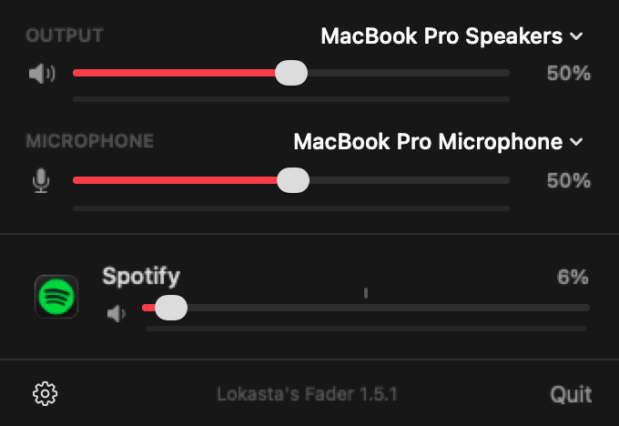

menu bar
menu bar0 to 200% per app
Every app gets its own slider and mute. Boost quiet apps past 100%: a soft limiter keeps them from clipping.
Free and open source for macOS
Turn Discord down without turning your game down. Per‑app volume from the menu bar or Control Center, with no drivers, no BlackHole and no virtual devices.
macOS 15 or later. Signed and notarized. MIT licensed. All releases

01 Why
Turning a call down means turning your music down too. The usual fixes install a virtual audio driver and ask you to rewire your output, and when something goes wrong your sound just stops.
02 Features
Every app gets its own slider and mute. Boost quiet apps past 100%: a soft limiter keeps them from clipping.
See what is actually playing: a meter for every app, for the output and for the microphone.
Each app's volume is saved and reapplied the next time it plays. Set it once, forget it.
Pick your speakers and microphone, with their system volume, right at the top of the panel.
Menu bar icon, a Control Center control on macOS 26, the Dictation key, a global shortcut, or Spotlight. Crowded menu bar on a notched MacBook? The keys still work.
Apps at 100% are left alone entirely. Meters only run while the panel is open.
Chrome's audio service shows up as Chrome, Safari's WebKit process as Safari, macOS alerts as "System Sounds".
No update checks, no analytics, no crash reporting. Audio is processed in memory and discarded.
Fully localized in English and Brazilian Portuguese.
03 How it works
Apple added process taps in macOS 14.2. Fader uses them to touch only the apps you change, and installs nothing in the system.
A tap captures the app's processes and, with mutedWhenTapped, keeps them from reaching the speakers directly.
A private aggregate device, visible only to Fader, pairs that tap with your current output.
An IO proc copies the samples to the output with your gain, ramped per buffer so changes never click.
Apps at 100% skip all of this. While the panel is open, their meters come from unmuted taps that share a single aggregate device, so 20 playing apps cost one audio thread, not twenty.
04 Privacy
Fader makes no network requests at all. You can confirm it with Little Snitch, or by searching the source for networking APIs.
network requests, analytics, crash reports
Process taps read each app's audio so Fader can change its volume and show its level. Nothing is recorded: audio is processed in memory, in real time, then discarded.
Only for the microphone level meter, only while the panel is open, and never on Bluetooth microphones (that would switch your headphones to call quality). Deny it and everything else still works.
macOS destroys its taps and every app's audio returns to normal immediately. Details in SECURITY.md.
05 Install
Grab the latest release. It's signed and notarized by Apple.
Open the disk image and drag Fader into your Applications folder, then launch it.
macOS asks once. That's how Fader reads each app's audio. Nothing is recorded.
On macOS 26: Control Center, Edit Controls, search "Fader", and drag it in (or to the menu bar).
Requires macOS 15 or later. Control Center control needs macOS 26.
With Xcode 26 or later:
brew install xcodegen
git clone https://github.com/Lokasta/fader && cd fader
./scripts/install.shSource builds are ad-hoc signed, so macOS asks for permissions again after each rebuild. To sign with your own certificate, see Config/Signing.xcconfig.
06 Built for AI agents
The repo ships an AGENTS.md written for Claude Code, Codex, Cursor and friends, with the architecture, the rules that keep audio safe, and how to verify changes without ears. Yes, humans should read it too.